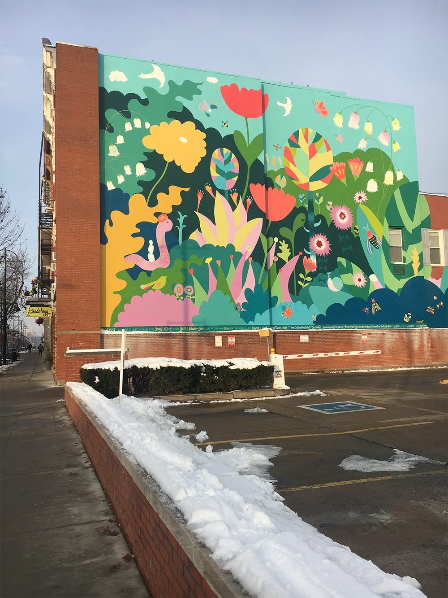
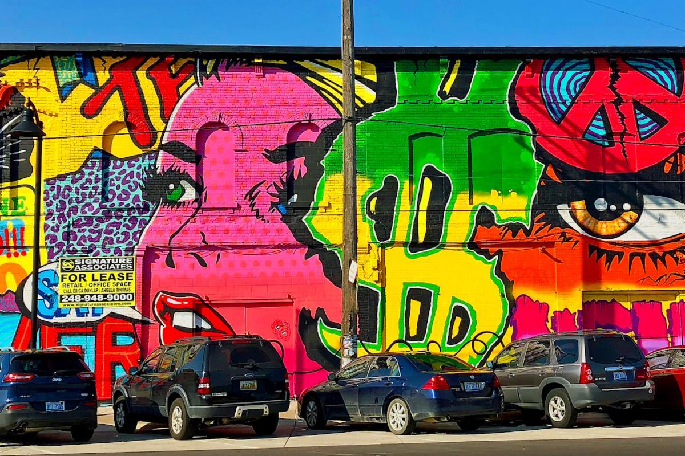

Iowa City’s Large-Scale Art Murals Bring New Life to City Walls
Artists complete murals as Blink gets underway: PHOTOS (Video)

Mercedes-Benz sued four artists whose murals appeared in its Instagram posts. 
Mercedes-Benz USA is suing the artists Daniel Bombardier, Maxx Gramajo, James "Dabls" Lewis, and Jeff Soto, whose murals appeared in photographs the company posted on Instagram in 2018. The company claims the artists have threatened to sue for copyright infringement, and are seeking a judge’s ruling asserting that the images do not constitute infringement. The legal action revolves around photos posted on Mercedes-Benz’s Instagram profile in January 2018 (that have since been deleted) promoting the automaker’s luxury sports utility vehicle, the Mercedes G 500. The images were shot in Detroit’s Eastern Market, which has become widely known for its Murals in the Market initiative, and where the defendants all had murals. In its lawsuit, Mercedes-Benz, which had obtained permits for the shoot, claimed that its images “fundamentally transformed the visual aesthetic and meaning” of the murals. “We attempted to discuss the matter with [Mercedes-Benz], but instead, they sued us claiming they did not violate any copyright laws and are asking the court to rule that we have no rights against them,” Jeff Soto said in a statement sent to Artsy. Soto’s collaborative mural with Maxx Gramajo appeared in the Mercedes-Benz photos.